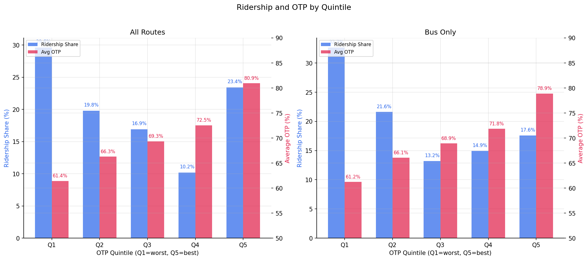
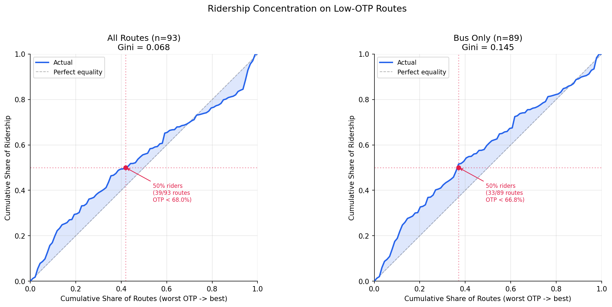

Analysis
25 - Ridership Concentration & Equity
Ridership and External Factors
Coverage: 2017-01 to 2025-11 (from otp_monthly, ridership_monthly).
Built 2026-03-27 20:03 UTC · Commit a28c93d
Page Navigation
Analysis Navigation
Data Provenance
flowchart LR
25_ridership_equity(["25 - Ridership Concentration & Equity"])
t_otp_monthly[("otp_monthly")] --> 25_ridership_equity
01_data_ingestion[["Data Ingestion"]] --> t_otp_monthly
u1_01_data_ingestion[/"data/routes_by_month.csv"/] --> 01_data_ingestion
u2_01_data_ingestion[/"data/PRT_Current_Routes_Full_System_de0e48fcbed24ebc8b0d933e47b56682.csv"/] --> 01_data_ingestion
u3_01_data_ingestion[/"data/Transit_stops_(current)_by_route_e040ee029227468ebf9d217402a82fa9.csv"/] --> 01_data_ingestion
u4_01_data_ingestion[/"data/PRT_Stop_Reference_Lookup_Table.csv"/] --> 01_data_ingestion
u5_01_data_ingestion[/"data/average-ridership/12bb84ed-397e-435c-8d1b-8ce543108698.csv"/] --> 01_data_ingestion
t_ridership_monthly[("ridership_monthly")] --> 25_ridership_equity
01_data_ingestion[["Data Ingestion"]] --> t_ridership_monthly
t_routes[("routes")] --> 25_ridership_equity
01_data_ingestion[["Data Ingestion"]] --> t_routes
d1_25_ridership_equity(("numpy (lib)")) --> 25_ridership_equity
d2_25_ridership_equity(("polars (lib)")) --> 25_ridership_equity
classDef page fill:#dbeafe,stroke:#1d4ed8,color:#1e3a8a,stroke-width:2px;
classDef table fill:#ecfeff,stroke:#0e7490,color:#164e63;
classDef dep fill:#fff7ed,stroke:#c2410c,color:#7c2d12,stroke-dasharray: 4 2;
classDef file fill:#eef2ff,stroke:#6366f1,color:#3730a3;
classDef api fill:#f0fdf4,stroke:#16a34a,color:#14532d;
classDef pipeline fill:#f5f3ff,stroke:#7c3aed,color:#4c1d95;
class 25_ridership_equity page;
class t_otp_monthly,t_ridership_monthly,t_routes table;
class d1_25_ridership_equity,d2_25_ridership_equity dep;
class u1_01_data_ingestion,u2_01_data_ingestion,u3_01_data_ingestion,u4_01_data_ingestion,u5_01_data_ingestion file;
class 01_data_ingestion pipeline;
Findings
Findings: Ridership Concentration & Equity
Summary
Ridership is moderately concentrated on low-OTP routes. The bottom quintile of routes by OTP (Q1, avg 61.2%) carries 29.6% of all ridership (32.7% bus-only), far more than its 20% "fair share." Half of all bus ridership is carried by just 33 of 89 routes, all with OTP below 66.8%. The Gini concentration index is modest (0.068 all routes, 0.145 bus-only), indicating the inequity is real but not extreme.
Key Numbers
- Gini concentration index: 0.068 (all routes), 0.145 (bus-only)
- 50% of ridership carried by 39/93 routes with OTP < 68.0% (all); 33/89 routes with OTP < 66.8% (bus)
- Q1 (worst OTP quintile): 19 routes, avg OTP 61.4%, carries 29.6% of ridership
- Q5 (best OTP quintile): 18 routes, avg OTP 80.9%, carries 23.4% of ridership
- Q4 (second-best): 18 routes, avg OTP 72.5%, carries only 10.2% of ridership
- 93 routes with 12+ months of paired OTP and ridership data
Observations
- The quintile distribution is U-shaped: Q1 (worst) and Q5 (best) carry the most ridership, while Q3-Q4 (middle) carry the least. This reflects two distinct high-ridership populations: heavily-used local bus routes with poor OTP (Q1) and rail/busway routes with good OTP and high ridership (Q5).
- The bus-only analysis sharpens the inequity: removing rail from Q5 drops its ridership share from 23.4% to 17.6%, while Q1 rises from 29.6% to 32.7%. Nearly a third of bus riders are on the worst-performing quintile of routes.
- The Gini index is low (0.068 all, 0.145 bus) because the concentration is moderate, not extreme. Ridership doesn't pile onto a handful of terrible routes -- it's spread across many poor-to-mediocre routes, with a few high-performing routes also carrying substantial ridership.
- The Lorenz curve bows above the diagonal throughout, confirming that at every point along the OTP spectrum, cumulative ridership exceeds what equal distribution would predict. The departure is most visible in the first 20-40% of routes (worst OTP).
Discussion
The equity picture is mixed. On one hand, the worst-performing routes carry a disproportionate share of riders -- nearly 30% of ridership on the bottom 20% of routes. On the other hand, the best routes (Q5) also carry substantial ridership, so it is not the case that reliable service is reserved for lightly-used routes. The U-shape reflects PRT's system structure: high-ridership corridors tend to be either long, many-stop local bus routes (which have poor OTP due to route complexity, per Analysis 07) or dedicated right-of-way routes (rail/busway, which have good OTP). Middle-performing routes tend to be lower-ridership suburban and express services.
The bus-only Gini (0.145) is more than double the all-mode Gini (0.068), confirming that rail's presence in Q5 masks a more pronounced equity problem within bus service. If PRT seeks to improve the rider-weighted experience, targeting the Q1 bus routes (avg OTP 61.2%, 32.7% of bus ridership) offers the highest human impact per intervention.
Caveats
- The Gini index here measures concentration of ridership across OTP ranks, not income inequality. A positive value means riders disproportionately use low-OTP routes; it does not imply any particular policy threshold.
- Ridership is averaged across all months, which weights the pre-COVID period (higher ridership) more heavily. Post-COVID ridership redistribution may have shifted the concentration pattern.
- OTP is route-level, not trip-level. A rider's actual experience depends on which trips they take, not just their route's monthly average.
- The quintile boundaries are sensitive to the number of routes. With 93 routes, each quintile contains 18-19 routes; small changes in route composition could shift the boundaries.
Output

bar chart of ridership share and average OTP by quintile.

Lorenz curve of ridership vs OTP rank (all routes + bus-only).
No interactive outputs declared.
Gini index, 50th-percentile OTP threshold, quintile breakdowns.
Preview CSV
Route-level OTP quintile assignments with ridership shares used in equity summaries.
Preview CSV
Methods
Methods: Ridership Concentration & Equity
Question
What share of total system ridership is carried by the lowest-performing (worst OTP) routes? Is there a concentration of riders on unreliable service?
Approach
- Compute route-level average OTP and average weekday ridership over the overlap period.
- Sort routes by OTP (worst to best) and compute cumulative ridership share.
- Plot a Lorenz-style curve: x-axis = cumulative share of routes (by OTP rank), y-axis = cumulative share of ridership. The diagonal represents perfect equality (every route carries the same ridership regardless of OTP). If the curve bows above the diagonal, ridership is concentrated on low-OTP routes.
- Compute a Gini-like concentration index: area between the Lorenz curve and the diagonal, scaled to [0, 1]. A value of 0 means ridership is uniformly distributed across OTP ranks; positive values mean riders are disproportionately on low-OTP routes.
- Identify the OTP threshold below which 50% of ridership is carried.
- Divide routes into OTP quintiles (Q1 = worst, Q5 = best) and compute each quintile's share of total ridership plus average OTP.
- Repeat all analyses for bus-only to control for mode effects.
Data
| Name | Description | Source |
|---|---|---|
otp_monthly |
route_id, month, otp | prt.db table |
ridership_monthly |
route_id, month, avg_riders; filtered to day_type='WEEKDAY' | prt.db table |
routes |
route_id, mode | prt.db table |
Notes: Overlap period (Jan 2019 -- Oct 2024); exclude routes with fewer than 12 months of paired data.
Output
output/ridership_lorenz.png-- Lorenz curve of ridership vs OTP rank (all routes + bus-only)output/quintile_summary.png-- bar chart of ridership share and average OTP by quintileoutput/equity_metrics.csv-- Gini index, 50th-percentile OTP threshold, quintile breakdowns
Source Code
|
Sources
| Name | Type | Why It Matters | Owner | Freshness | Caveat |
|---|---|---|---|---|---|
| otp_monthly | table | Primary analytical table used in this page's computations. | Produced by Data Ingestion. | Updated when the producing pipeline step is rerun. | Coverage depends on upstream source availability and ETL assumptions. |
Upstream sources (5)
|
|||||
| ridership_monthly | table | Primary analytical table used in this page's computations. | Produced by Data Ingestion. | Updated when the producing pipeline step is rerun. | Coverage depends on upstream source availability and ETL assumptions. |
Upstream sources (5)
|
|||||
| routes | table | Primary analytical table used in this page's computations. | Produced by Data Ingestion. | Updated when the producing pipeline step is rerun. | Coverage depends on upstream source availability and ETL assumptions. |
Upstream sources (5)
|
|||||
| numpy | dependency | Runtime dependency required for this page's pipeline or analysis code. | Open-source Python ecosystem maintainers. | Version pinned by project environment until dependency updates are applied. | Library updates may change behavior or defaults. |
| polars | dependency | Runtime dependency required for this page's pipeline or analysis code. | Open-source Python ecosystem maintainers. | Version pinned by project environment until dependency updates are applied. | Library updates may change behavior or defaults. |